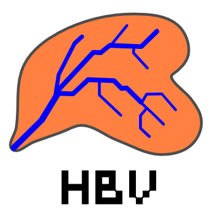
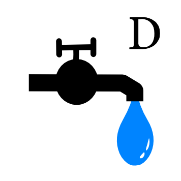

RS MINERVE is an object-oriented modeling software. The different processes are modeled with equation-based objects, presented hereafter in Section 1.1 (Hydrology) and Section 1.3 (Standard objects). Hydraulic infrastructures and Regulation objects are presented in Section 2.
The implemented hydrological models (Snow-SD, SWMM and GSM-SOCONT) have been developed within the framework of different research projects, namely CRUEX (Bérod 1994), SWURVE (Schaefli et al. 2005) and MINERVE1 (Y. Hamdi, Hingray, and Musy 2003; Y. Hamdi, Hingray, and Musy 2005).
The hydrological models HBV (Bergström 1976, 1992), GR4J (Perrin, Michel, and Andréassian 2003), SAC (Burnash 1995) and SCS (McGuinness and Bordne 1972) are also included in the software RS MINERVE for extending the hydrological modeling possibilities.
1.1 Hydrology
The Base objects are mostly composed of the hydro-meteorological objects. For more details, see the Technical Manual.
| Virtual weather station - It calculates the local meteorological conditions (precipitation (\(P\)), temperature (\(T\)) and potential evapotranspiration (\(ETP\))) based on observed or forecasted data from the database and based on Thiessen or Shepard interpolations. In addition, the \(ETP\) can also be calculated either with a constant value or from one of the different equations proposed by Turc (1955, 1961), McGuinness and Bordne (1972) or Oudin (2004). The method can be selected in the Settings (see Section 7). For more details, please refer to the Technical Manual of RS MINERVE. | |
| Snow-SD - Simulates the time evolution of the snow pack based on temperature (\(T\)) and precipitation (\(P\)). The output is an equivalent precipitation (\(P_{eq}\)) and the snow height (\(H\)) proposed as input to other models such as SAC-SMA or GR4J. | |
| Runoff (SWMM) - The runoff-based hydrograph is calculated with this object from a net rainfall (\(i_{Net}\)). | |
| GSM (Glacial Snow Melt) - The GSM object combines Snow and Glacier models. | |
| SOCONT (SOil CONTribution) - The SOCONT object combines the Snow, Infiltration (GR3) and Runoff (SWMM) models. | |
|  | HBV - This integrated rainfall-runoff model is based on the HBV model. Using a precipitation (\(P\)), a temperature (\(T\)) and a potential evapotranspiration (\(ETP\)) as inputs, it produces a total discharge (\(Q_{tot}\)) composed of a run-off flow (\(Q_r\)), an interflow (\(Q_u\)) and a baseflow (\(Q_l\)). |
| GR4J - This object is based on the GR4J model, containing 4 parameters. Using an equivalent precipitation (\(P_{eq}\)) and a potential evapotransipration (\(ETP\)) as inputs, an outflow is calculated. | |
| SAC - The SAC-SMA (Sacramento-Soil Moisture Account) object uses an equivalent precipitation (\(P_{eq}\)) and a potential evapotranspiration (\(ETP\)) as inputs and provides an outflow at the outlet of the sub-basin. | |
| SCS - The SCS (Soil Conservation Service) object focuses on specific events modelling mainly for small watersheds. It is a simplified procedure for assessing an event hydrograph using limited input data (precipitation). |
1.2 Rivers
Different Rivers objects are proposed by RS MINERVE:
| Lag-Time - The Lag-Time river calculates a river transition based on a lag-time but does not produce any attenuation of the flow. | |
| Kinematic Wave - The flow is transferred based on the Kinematic wave equations. | |
| Muskingum-Cunge - The flow is transferred based on the Muskingum-Cunge (1969, 1991) equations. | |
| St-Venant - The flow is transferred based on the St-Venant equations. |
1.3 Standard
The Standard objects are complementary but generally necessary for feeding, structuring and calibrating the model.
| Junction - This object allows calculating the addition of different flow inputs (also coming from hydraulic infrastructures). | |
| Time series - Data can be provided to the model as time series (time in seconds). Data of any type (Flow, Temperature, Precipitation, ETP,…) can be directly transferred to other objects. | |
|  | Source - Data can be also loaded from a database. Sources are mostly used to define flow time series for turbine or pump flow and as reference flow for calibration (with a Comparator object). |
| Comparator - This object is used to compare the results of a simulation with a reference data coming from another object, generally a Source. Both objects are connected to the Comparator for results comparison. | |
| Submodel - A combination of objects can be saved as a submodel and integrated as such in a model. | |
| Group Interface - It allows transferring the input or output variables between different hierarchical levels. |
For hydraulic infrastructures objects and regulation objects, please refer to Section 2.
1.4 Creation of a hydrological model
The steps to create a hydrological model for a natural basin (without hydraulic infrastructures) are presented in this chapter.
To create the model
Open RS MINERVE.
Click on the type of object to be added (Objects frame, Figure 1). With the pencil, click in the Interface to add the object. Repeat the operation for all objects. If the wrong object is selected in the Objects frame, use the Esc key to cancel.
Select Connections in the Editing tools frame (Figure 1) or press the space key to switch, interconnect the objects with blue arrows in the sense of flow and select the variables(s) concerned by the connections in the pop-ups (Figure 1.1).2
Choose Select in the Editing tools frame or press the space key to switch.
By clicking on each object separately,
Rename the objects.
Modify their fixed parameters (such as coordinates for the Station and surface for main hydrological objects) in the Parameters frame (Figure 1). See Section A for a complete list of parameters and initial conditions.
Define the Zone of each object in the Object frame (Figure 1)3 Use “Tab” to validate the Zone number.
To define the Parameters of the model objects:
Click on Parameters in the Parameters and Variables frame (Figure 1).
Select an Object type and a Zone Id in the Selection frame (Figure 1.2). Use Ctrl to select more than one Zone ID.
In the Parameters management frame (Figure 1.3, left), the parameters of the selected object type are listed. Parameters with identical value in all objects of the selected zone(s) are checked by default. The objects contained in the zone(s) and their respective parameter values are displayed in the Objects list (Figure 1.3, right).
Define the parameters to be calibrated, i.e. uniformly modified, by checking and unchecking the parameters in the Parameters management frame (the [x] column, fig-param_management_frame, left).
Modify in the Parameters management frame the values of the Parameters to be calibrated and click on Apply selected changes. (Alternatively, individually modify the values of each object in the Objects list (Figure 1.3, right)).
Repeat the procedure for all object types in each zone.
To define the Initial Conditions:
Click on Initial Conditions in the Parameters and Variables frame (Figure 1).
Proceed in a similar way than for the Parameters definition to modify all the Initial Conditions.
Initial conditions are generally not known precisely. Approximated values can be entered to improve the simulation results. Final conditions of a previous simulation ending at the start time of the period of interest can be used as current initial conditions to improve the results.
To save the project:
Click on Save in the Project frame (Figure 1).
Define the file name and save.
1.5 Exportation of a submodel
Combinations of objects can be exported and later imported as Submodel objects in a complete model. This allows the structuration of the model by organizing it in different hierarchical levels.
Add a Group Interface to the combination of objects to be exported.4
Link the output object of the model (Junction in Figure 1.4) to the Group Interface. Select the link(s) to be created in the pop-up (Flow in the example of Figure 1.4).5
Export the active model with the Export button in the Model frame (Figure 1).6
Create a new project with the New button in the Project frame.7
Import the Submodel with the Import button in the Model frame.
Open the Submodel with a right-click on it. The model previously created appears.
Return to the upper hierarchical level with the Back button (Model frame) or by pressing the Esc button.
Add a Junction object and link the Submodel to the new Junction (Figure 1.5). In the example of Figure 1.5, the flow of the new Junction now corresponds to the flow of the Junction in the Submodel.
At the same time, if a Submodel receives also an input from upstream, a second Group Interface has to be added in the Submodel and linked to the object receiving the incoming variables. Group Interfaces can support more than one variable as input and/or as output.
Submodels can also be created by adding an empty Submodel object8 and then adding the adequate objects in the Submodel (opened with a right-click). In a similar way, objects can be added to or deleted from imported Submodels.
Modifying the Zone of a Submodel modifies the zone of all the objects contained in the Submodel.
1.6 Model conversion
The conversion between different hydrological models is possible with the button “Converter” of the Model Properties frame (Figure 1.6).
The model conversion is direct for all hydrological model as presented in Figure 1.10. For achieving the conversion, initial and final hydrological model types are selected. Then, the zone(s) and the object(s) to convert are chosen (Figure 1.7).
In the current version, only the parameter \(A\) (Surface) is transferred to the new model. All other parameters are fixed to the by default values of each model.
If the converted model does not need all inputs, a message informs that one of the inputs is deleted, as presented in Figure 1.8 for the input Temperature.
Finally, if the converted model needs more inputs than the original one, a message informs that one or several inputs need to be added, as presented in Figure 1.9 for the input Temperature. In that case, this/these input(s) is/are added between the station and the model (If the data comes from several Stations or Time Series, the user needs to link himself and to select the correct inputs among all possibilities).
Regarding the outputs, the total discharge (\(Qtot\) or \(Q\) depending on the model) is directly linked to the downstream object after the conversion.
If any other discharge is linked downstream, e.g. the \(Qr\) in the SOCONT model to a junction, the link is deleted after conversion.
1.7 Single sub-basin parametrization
The parametrization (or calibration) process aims to progressively improve the model to fit the simulated data to the reference data (e.g. the observations) by iteratively adjusting the object’s parameters.
To proceed to the optimal parametrization (or calibration), observed data are required as comparison basis for the simulated data. Sites of measure stations generally define outlets of sub-basins since they represent the location of comparison (simulated data vs. observed data).9
For simplicity, division into zones generally respects the sub-basin’s division. However, this is not compulsory and a zone can correspond to several sub-basins or one sub-basin can be divided into several zones. In this subchapter, it is assumed that the sub-basin is composed of a single zone.
Model’s performance evaluation
Before adjusting the parameters, the current performance of the model is evaluated.
Click on the Comparator object which has been added and connected as presented in Figure 1.1.
In the Series frame (Figure 1.11), select \(Q_{reference}\) and \(Q_{simulation}\) (use Ctrl to select both).
Visualize the actual results:
In the Series frame, both curves are plotted together under Graphs.
In the Comparator frame, seven performance indicators are provided (read the Technical Manual for more information).
Nash coefficient
Nash-ln coefficient
Pearson Correlation Coefficient
Kling-Gupta Efficiency
Bias Score
Relative Root Mean Square Error
Relative Volume Bias
Normalized Peak Error
Manual parameters adjustment
Based on the current model’s performance, object’s parameters can be adjusted to improve the next run’s performance.
Click on Parameters in the Parameters and variables frame (Figure 1.11).
Select in the Selection frame (Figure 1.11) the type of object to be modified and the corresponding zone.
Modify the selection (checks) of parameters in the Parameters Management frame to select only the ones to be calibrated (i.e. to be uniformly modified).
Modify the values of the selected parameters and click on Apply selected changes. Parameters are modified in the listed objects.
Proceed in a similar way for all object types.
Modify also the initial conditions to fit better the reference data.
After running the model, analyze the results in the comparator and modify again the parameters when necessary.
The procedure is iterative until the simulation results are considered sufficiently satisfying for a specified zone.
Parameters and Initial conditions can be exported to be, later, imported again. Use Export P and Import P for the parameters and Export IC and Import IC for the initial conditions in the Parameters and variables frame (Figure 1.11). The parameters or initial conditions can be saved as .txt file or also as .xlsx file with one sheet per object type.
Automatic parameters adjustment
An automatic calibration can be also achieved thanks to a specific tool developed in the Expert module. Please the Section 6.1 for more information.
1.8 Complete basin parametrization
When a basin is composed of many sub-basins, the parametrization has to be progressively achieved from upstream to downstream in the basin. By proceeding as such, contributions from the upstream calibrated sub-basin(s) are considered as input(s) to the downstream sub-basin on which the parametrization is performed. Parameters are modified for the concerned sub-basin to obtain the best possible results at the outlet of the sub-basin. The calibration module (Section 6.1) can realize multiple parametrizations for calibrating these complex basins from upstream to downstream.
Depending on the quality of the simulation results, inputs from upstream sub-basins can be replaced in the parametrization process by observed data at the entrance of the sub-basin being calibrated.
References
MINERVE: Modélisation des Intempéries de Nature Extrême du Rhône Valaisan et de leurs Effets (Modeling of Rhone extreme floods in Valais and their consequences).↩︎
In the absence of water flow, connect arrows in the sense of information transfer.↩︎
The concept of Zones allows the modification of a parameter or initial condition to all the objects contained in the selected zone(s) by attributing a unique value.↩︎
Group Interfaces are required to assemble a submodel with the upper hierarchical level. It allows transferring the input and/or output variables.↩︎
If only one link can be created, it is selected by default. If more than one link is possible, none is selected.↩︎
During the exportation, only the elements contained in the active hierarchical level, including all the submodels and objects, are considered. Hierarchically higher elements are not exported.↩︎
Or, alternatively, open a project with Project \(\rightarrow\) Open.↩︎
By selecting Submodel in the Standard objects frame and adding the object in the Interface.↩︎
Other factors are also considered during the basin division such as reservoir locations or river junctions.↩︎